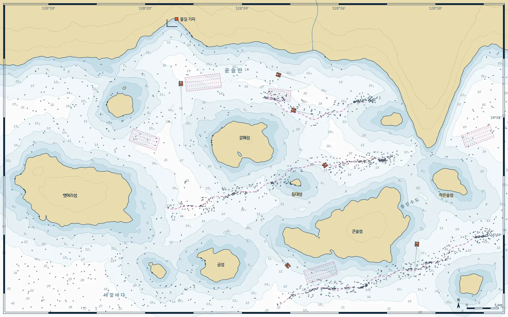

바다 쓰레기를
해변에 닿기 전에
줍습니다
쓰레기는 바다 위에서 먼저 한 줄로 모입니다. 물길은 조류와 바람으로 그 자리를 미리 계산하고, 무인 수거선 누비를 보냅니다.
지금 윤슬만과 바깥 바다에서 누비 9척이 일합니다.
해변에 닿으면 이미 늦습니다
양식장 부표, 끊어진 그물, 페트병. 바다에서는 한데 모여 떠다니던 쓰레기가 해안에 닿으면 몇 킬로미터에 걸쳐 흩어집니다.
바위 틈에 낀 스티로폼은 사람이 하나씩 줍는 수밖에 없고, 줍기 전에 잘게 부서집니다.
해안선의 짙은 점이 해변에 닿은 쓰레기입니다. 지금은 보트가 모두 기지에 있습니다.
바다 위에는 쓰레기가 모이는 선이 있습니다
성질이 다른 두 물이 만나는 곳에서는 떠 있는 것들이 한 줄로 모입니다. 어민들이 거품 띠를 보고 알아보는 이 선을 수렴선이라고 부릅니다.
수렴선은 조류와 바람을 따라 움직이지만, 어디로 움직일지는 계산할 수 있습니다.
자홍색 점선이 지금 계산한 수렴선입니다.
하루는 네 단계로 돌아갑니다
예보
매시간 조류, 바람, 강물 유입 자료를 합쳐 48시간 앞까지 쓰레기의 흐름을 계산합니다. 수렴선이 언제 어디에 생길지가 나옵니다.
화살표는 지금 물이 흐르는 방향, 옅은 점선은 2시간, 4시간, 6시간 뒤의 수렴선입니다.
- 갱신
- 1시간마다
- 예보 범위
- 48시간
- 격자
- 100 m
출항
예보를 받은 보트가 기지에서 스스로 출발합니다. 양식장과 항로를 피해 경로를 짜고, 관제사 한 명이 최대 여덟 척을 지켜봅니다.
점선이 보트마다 짠 경로입니다.
수거
수렴선을 따라 4노트로 천천히 지나가며 폭 1.6미터 입구로 떠 있는 것을 걷어 올립니다. 그물이나 밧줄이 걸리면 멈추고 관제사에게 사진을 보냅니다.
보트 옆 막대가 적재함이 찬 정도입니다.
하역
적재함이 차면 기지로 돌아옵니다. 스티로폼, 그물, 플라스틱을 나눠 무게를 재고 재활용 업체로 보냅니다. 배터리를 바꿔 끼우면 20분 뒤 다시 나갑니다.
- 스티로폼 61%
- 그물·밧줄 18%
- 플라스틱 12%
- 기타 9%
바람을 바꿔 보세요
바람이 바뀌면 수렴선이 움직이고, 보트는 경로를 다시 짭니다. 해도의 바다를 누르면 그 자리에 쓰레기가 생깁니다.
보트 운항을 끄고 30초쯤 지켜보세요. 위쪽 ‘해변 도착’ 수가 늘어납니다.

지형은 설명을 위해 단순화했습니다.